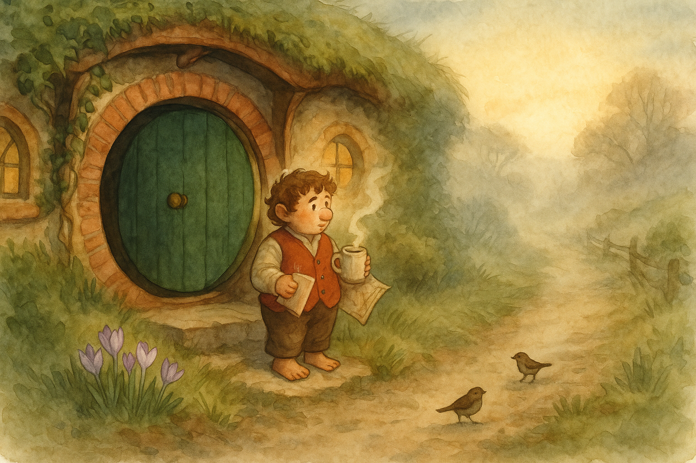

There was a softness to the air today — not quite spring, but a polite knock at the door, as if the season were asking whether it might come in for a moment. The Hill held its breath, and even the path seemed less sharp underfoot.
I stood on the step at Bag End with my mug and a folded map (a habit that comes back whenever the wind changes), watching a few bright crocuses daring themselves up through the dark earth. In Middle Earth the Road never truly goes away; it simply waits, like ink in a pen, until one feels ready to write again.
I did not go anywhere grand — only down the lane and back — but I returned feeling as if I’d been properly outside, and properly alive. As I once wrote, "Roads go ever ever on…" and it is a comfort to remember they begin, more often than not, with one small, ordinary doorstep.
Filed under: Middle Earth • Written at Bag End